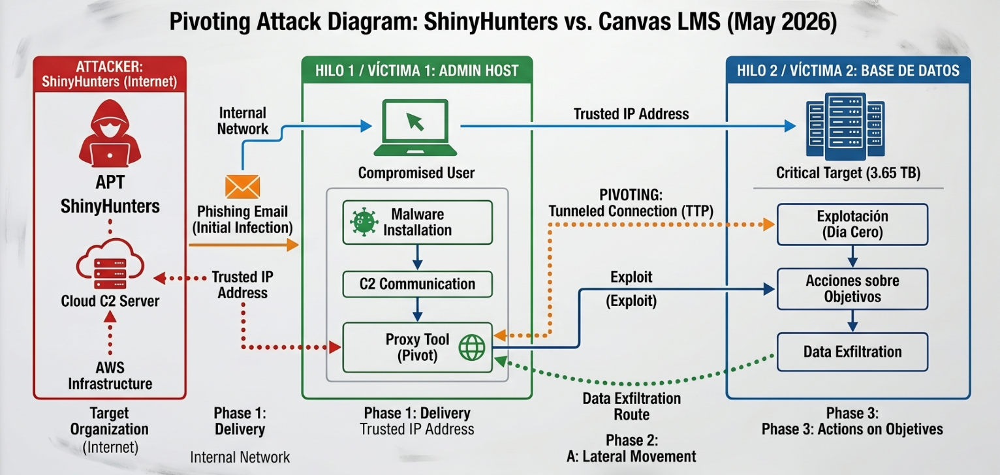

07. EVIDENCIA TÉCNICA: DIAMOND MODEL OF INTRUSION ANALYSIS
Introducción al Modelado Científico
Estructura Operativa: Los Cuatro Vértices del Diamante
1. Adversario: Nexo Criminal
Operador Táctico: El grupo delictivo transnacional ShinyHunters[cite: 249].
Motivación Primaria: Lucro financiero masivo mediante extorsión y venta de bases de datos sensibles en foros clandestinos (BreachForums). Se identificó una firma operativa caracterizada por el despliegue rápido de exploits y demandas de rescate agresivas en canales digitales automatizados.
2. Capacidad: Arsenal Lógico
Vectores de Ataque: Uso de vulnerabilidades de Día Cero (Zero-Day) de evasión de autenticación y scripts avanzados de automatización para el barrido de tokens criptográficos. Implementaron herramientas de interceptación lógica capaces de evadir firmas de auditoría convencionales y eludir los perímetros de inspección básicos de la API.
3. Infraestructura: Nube Híbrida
Entorno Afectado: Servidores centralizados de almacenamiento en la nube (Buckets de Amazon S3) de AWS asociados a la plataforma Canvas LMS[cite: 249]. El ataque utilizó nodos proxy distribuidos globalmente (Fast-Flux DNS) y servidores de comando y control (C2) para enmascarar los túneles de exfiltración de tráfico.
4. Víctima: Perfil Institucional
Objetivo Central: Instancias lógicas y bases de datos de la plataforma educativa virtual Canvas LMS[cite: 249]. El impacto operativo directo incluyó el compromiso absoluto y exfiltración de un volumen crítico equivalente a 3.65 Terabytes (TB) de información personal, registros académicos e identidades institucionales de usuarios.
Línea de Tiempo Táctica: Fases del Ataque (Cyber Kill Chain)
Modelado Gráfico: Vector de Exfiltración de Infraestructura
> SYSTEM_NETWORK_MAP_RENDER_OK [IMAGE_ID: infraestructura_canvas]

Figura 3.1: Diagrama de pivoteo lógico desde la API perimetral comprometida hacia los almacenes centrales de datos de la organización (Buckets S3).
Análisis Técnico-Analítico y Remediación
El compromiso de Canvas LMS demuestra que la seguridad perimetral tradicional resulta obsoleta ante actores con capacidades avanzadas de Día Cero[cite: 249]. La exfiltración masiva de 3.65 TB de datos ocurrió debido a la centralización de privilegios y la ausencia de inspecciones analíticas profundas sobre los flujos de salida de la red corporativa[cite: 249].
Estrategias Defensivas de Mitigación Organizada:
- Implementación estricta de Zero Trust: Validar de forma continua cada petición, sin importar el nivel jerárquico aparente de la llave de API.
- Cifrado de Datos en Reposo y Tránsito: Aplicar algoritmos robustos con rotación automatizada de llaves para mitigar el impacto en caso de sufrir una exfiltración exitosa.
- Sistemas DLP (Data Loss Prevention): Configurar bloqueos automáticos en el perímetro perimetral ante la detección de descargas volumétricas sospechosas de información.